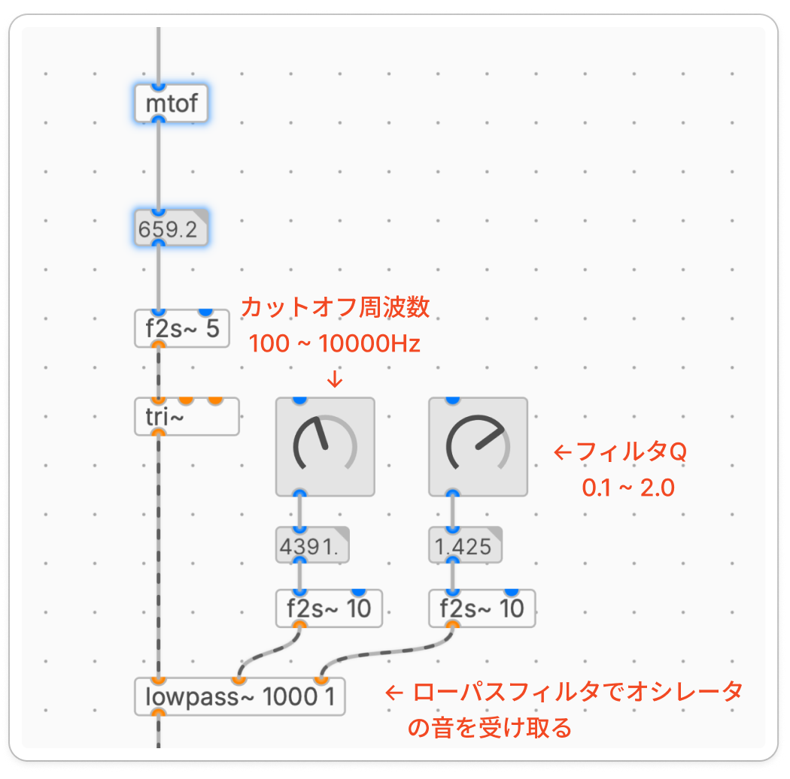
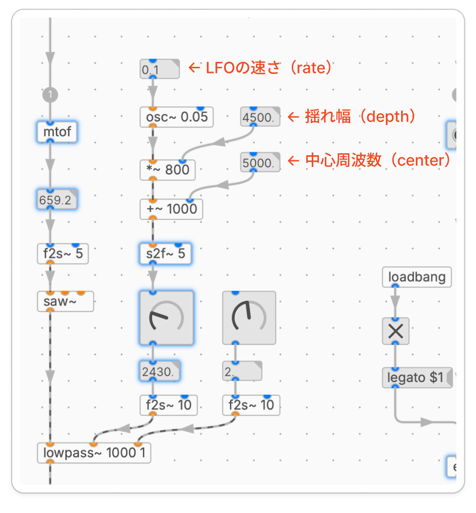

第6回 フィルター ― VCF と LFO
滋賀大学 自主ゼミ「サウンドプログラミング入門」 2026年度 春学期
1. 今回の目的
1.1 アナログシンセの3要素：VCO・VCA・VCF
シンセサイザの音作りの基本は 減算合成(subtractive synthesis)と呼ばれます。倍音をたっぷり含んだ波形を作り、そこから いらない倍音を削って 音色を整える、という考え方です。アナログシンセでは、この流れを3つの部品で組み立てます。
| 部品 | 正式名称 | 役割 | これまで使ってきたもの |
|---|---|---|---|
| VCO | Voltage Controlled Oscillator | 波形(音の素)を作る | osc~ / pulse~ など |
| VCF | Voltage Controlled Filter | 倍音を削って音色を作る | ← 今回やる「F」 |
| VCA | Voltage Controlled Amplifier | 音量をエンベロープで動かす | *~ ＋ エンベロープ |
信号は VCO → VCF → VCA の順に流れます。
[VCO] → [VCF] → [VCA] → 出力波形 音色 音量osc~等 今回 *~＋envelope
これまでの回で、O(オシレータ)は osc~ や pulse~ で、A(アンプ＝音量)は *~ とエンベロープで、すでに作ってきました。今回は、残っていた F(フィルタ)の部分を扱います。これでアナログシンセの3要素が揃います。
補足: 頭の VC(Voltage Controlled＝電圧制御)は、「パラメータを電圧で動かせる」という意味です。plugdata では電圧の代わりに 信号 でパラメータを動かせます。今回の後半、LFO でフィルタを動かすことで、「Voltage Controlled」をコンピュータで再現することができます。
1.2 今回扱うこと
フィルタの種類(ローパス・ハイパス・バンドパス)とカットオフ・レゾナンス
plugdata でフィルタをかける(
lowpass~など)＋ノブ操作(+α) LFO でフィルタを動かす(
vcf~でオートワウ)
2. フィルタとは
2.1 フィルタの働き
音は、いろいろな高さの 倍音 の集まりでできています。フィルタは、その中の 特定の周波数帯域を通したり、削ったり して音色を変えます。「高い倍音を削れば丸くこもった音」「低い成分を削れば細い音」というように、削り方で音の印象が決まります。
2.2 フィルタの種類
| 種類 | 通す帯域 | 音の印象 |
|---|---|---|
| ローパス(LPF) | 低い音を通す(高い倍音を削る) | 丸い・こもった・暖かい |
| ハイパス(HPF) | 高い音を通す(低い成分を削る) | 細い・シャリっとした |
| バンドパス(BPF) | ある帯域だけ通す | 鼻にかかった・電話の声 |
シンセでもっともよく使うのは ローパス です。ローパスを使うことで、指定した周波数より上の倍音がだんだん削られます。
2.3 カットオフとレゾナンス
フィルタの効き方は、おもに2つのパラメータで決まります。
| パラメータ | 意味 |
|---|---|
| カットオフ周波数(cutoff) | フィルタが効き始める境目の周波数 |
| レゾナンス(resonance, Q) | カットオフ付近を強調する量 |
レゾナンス を上げると、カットオフのすぐ近くの音が持ち上がり、「ピーッ」というクセのある、いかにもシンセらしい音になります。上げすぎると鋭く発振気味になるので、ほどほどにします。
3. plugdata でフィルタをかける
3.1 フィルタオブジェクト
plugdata(ELSE)には、種類ごとにフィルタオブジェクトが用意されています。引数は カットオフ周波数 と レゾナンス(Q) です。
| オブジェクト | 種類 |
|---|---|
[lowpass~ 周波数 Q] | ローパス |
[highpass~ 周波数 Q] | ハイパス |
[bandpass~ 周波数 Q] | バンドパス |
インレットは左から、①信号入力 ②カットオフ周波数 ③レゾナンス の3つです。②③にノブを繋げば、リアルタイムに操作できます。
3.2 シーケンサにフィルタをかける
前回のシーケンサの音をローパスに通し、カットオフとレゾナンスをノブで操作してみます。カットオフのノブを下げていくと、シーケンサの音がだんだんこもっていきます。レゾナンスを上げると、カットオフ付近が強調されて、音にクセと存在感が出ます。オシレータには倍音成分を多く含む波形を選ぶとフィルタの効果がわかりやすいので、[pulse~]（矩形波）や[tri~]（三角波）、[saw~]（ノコギリ波）などを選ぶと良いです。

図3.2 シーケンサにフィルタをかける
下記の動画のようにシーケンサを動かしながらknobを動かしてみましょう。動かしてみると下記のような変化を感じることができます。
カットオフ周波数を上下 → 下げると音が篭る、上げると音の広域が広がる
Q値あげてカットオフを上下 → フィルタのカットオフ部分が強調される（発振の効果）
+α オシレータを変更してみる
シーケンサを動かしながらフィルタのパラメータを動かす（デモ動画）
4. （+α）LFO でフィルタを動かす
4.1 LFO とは
LFO(Low Frequency Oscillator)は、耳に聞こえないくらい低い周波数(およそ20Hz以下、数Hz程度)のオシレータです。音そのものとして鳴らすのではなく、他のパラメータを揺らす ために使います。
つまり、これまで音作りに使ってきた osc~ と同じものを、ゆっくり動かして「コントロール用」に使う、というだけです。どこに繋ぐかで効果が変わります。
| LFOの繋ぎ先 | 効果 |
|---|---|
| VCO(音の高さ) | ビブラート(音程が揺れる) |
| VCA(音量) | トレモロ(音量が揺れる) |
| VCF(カットオフ) | オートワウ(音色が自動で開閉) ← 今回 |
今回は、LFO で フィルタのカットオフ を揺らします。ここで、フィルタを 信号でコントロールできる こと、つまり「Voltage Controlled」が必要になります。
4.2 vcf~：信号でカットオフを動かせるフィルタ
§3 の [lowpass~] などは、カットオフを 数値(ノブ) で設定するタイプでした。これに対して、カットオフを 信号でぐりぐり動かす には、名前もそのままの [vcf~](voltage controlled filter)を使います。
[vcf~] はバンドパスフィルタで、インレットは次の通りです。
| インレット | 内容 |
|---|---|
| ① 左(信号) | フィルタにかける音 |
| ② 中(信号) | 中心周波数(＝カットオフ) |
| ③ 右(数値) | レゾナンス(Q) |
ポイントは、②の中心周波数が「信号」インレット であることです。ここに LFO の信号を入れると、カットオフが自動で動きます。
4.3 LFO でカットオフを揺らす
LFO(osc~)は -1〜1 の信号を出すので、そのままではカットオフの周波数になりません。[*~] で 揺れ幅(depth) を、[+~] で 中心の周波数(center) を足して、周波数の範囲に変換します。
これで、カットオフが1秒周期でゆっくり開閉します。前回のシーケンサにかけると、刻みに合わせて音色が波打ち、動きのあるフレーズになります。LFO の 速さ(rate) は [osc~] の周波数、深さ(depth) は [*~] の値なので、この2つをノブにすると操作しやすくなります。

図4.3 LFO でフィルタのカットオフを揺らす（オートワウ）
LFOでローパスのカットオフを制御する（デモ動画）
4.4 gateを入れてLFOをオンオフ
LFOでの自動制御とマウスでのKnobの制御を切り替えられるようにしておきます。[gate]というオブジェクトをLFOの入力値とKnobの間に挟んでおくことで、[tgl]を使って入力値のオンオフを切り替えることができます。
xxxxxxxxxx[tgl]←gateのオンオフ [s2f~ 5] ← LFOの入力| || __________________」| |[gate ] ← 左インレットにtgl、右インレットに入力値を入れる

図4.4 [gate] でLFOのオンオフを切り替える
まとめ
アナログシンセは VCO → VCF → VCA。O(
osc~等)と A(*~＋エンベロープ)は既習、今回は F(フィルタ)フィルタの種類：ローパス・ハイパス・バンドパス。パラメータは カットオフ と レゾナンス
plugdata：
[lowpass~]/[highpass~]/[bandpass~]。カットオフのノブは 対数スケール が操作しやすいLFO は、ゆっくりした
osc~でパラメータを揺らすもの。繋ぎ先で効果が変わる(ビブラート／トレモロ／オートワウ)カットオフを 信号 で動かすには
[vcf~](voltage controlled filter)。LFO を繋ぐと オートワウ になり、「Voltage Controlled」の意味が実感できる